A
v3 candidate response
- Run
n/a- Status
available- Artifacts
- metadata
- Cells: 84
- Response type: primary_thrown_response
- S0: 4.000000e+06 m2
本页汇总 v3 candidate grid、冻结的 HAWC-style prefit selector、Nhit>=125 观测规约、Crab-local annulus 二阶背景曲面、forward folding fit 和 diagnostic SED points。
N_on/B_on, excess, significance, Stage F pulls, or Stage G residuals. Stage D uses direct_expectation; Li-Ma remains not applicable unless a future off-counts background is produced. Stage D candidate-grid quality may fail when excluded diagnostic/probe cells have fragile annulus fits; the frozen baseline warning count is reported separately. Background systematics compare default versus PSF-shifted annuli and first- versus second-order surfaces using the same Stage D counts maps.
1,2,3,4,14,15,16,17,26,27,28,29,30,39,40,41,42,43,52,53,54,55,65,66,67,68,69,81,82,83. The older nominal Stage F/G artifacts are kept as a reference; they contain 2,3,4,14,15,16,17,27,28,29,30,31,40,41,42,43,44,53,54,55,56,57,66,67,68,69,70,80,81,82,83, so their pending selector cells are 1,26,39,52,65 and stale result-only cells are 31,44,56,57,70,80.
Roadmap v3 · Cell-selection diagnostics · Stage E report · Stage F report · Stage G report · PSF-borrow Stage F report · PSF-borrow Stage G report
The final fit-cell set used in the PSF-borrowing systematic is a frozen prefit MC/response selection, not a Crab-significance selection. It starts from the 84-cell Nhit x predE candidate grid, keeps cells inside the MC central response support, follows the MC occupancy ridge in each Nhit row, requires adequate MC/statistical support and usable PSF information, and then applies the high-Nhit edge veto. The selector is therefore fixed before looking at Stage E excess, Stage F pulls, or Stage G residuals.
The active selection contains 30 cells: 1,2,3,4,14,15,16,17,26,27,28,29,30,39,40,41,42,43,52,53,54,55,65,66,67,68,69,81,82,83. Cells 39/52/65 are kept because they are ridge-left physical candidates; their nominal PSF fails the theta-support test, so the v3_psfborrow branch replaces only their PSF with neighboring-cell PSFs. Cells 79/80 stay excluded because they are high-Nhit edge cells with low-stat/PSF-untrusted behavior.
| Nhit bin | kept cells | predE bins | ridge fractions | MC counts | PSF note |
|---|---|---|---|---|---|
| [125,200) | 1,2,3,4 | [2,2.5); [2.5,3); [3,3.25); [3.25,3.5) | 0.446, 1, 0.212, 0.101 | 186,591, 418,034, 88,759, 42,094 | direct Stage B PSF |
| [200,300) | 14,15,16,17 | [2.5,3); [3,3.25); [3.25,3.5); [3.5,3.75) | 1, 0.48, 0.215, 0.102 | 255,726, 122,642, 55,093, 26,172 | direct Stage B PSF |
| [300,500) | 26,27,28,29,30 | [2.5,3); [3,3.25); [3.25,3.5); [3.5,3.75); [3.75,4.0) | 0.529, 1, 0.74, 0.31, 0.138 | 80,182, 151,506, 112,141, 46,983, 20,906 | direct Stage B PSF |
| [500,800) | 39,40,41,42,43 | [3,3.25); [3.25,3.5); [3.5,3.75); [3.75,4.0); [4.0,4.25) | 0.31, 1, 0.766, 0.298, 0.118 | 27,769, 89,513, 68,604, 26,703, 10,601 | 39 <- 40 (nearest_neighbor_borrow) |
| [800,1100) | 52,53,54,55 | [3.25,3.5); [3.5,3.75); [3.75,4.0); [4.0,4.25) | 0.481, 1, 0.69, 0.275 | 15,783, 32,787, 22,615, 9,020 | 52 <- 53,54 (nearest_neighbor_weighted_interpolation) |
| [1100,2000) | 65,66,67,68,69 | [3.5,3.75); [3.75,4.0); [4.0,4.25); [4.25,4.5); [4.5,4.75) | 0.457, 0.989, 1, 0.558, 0.235 | 10,960, 23,726, 23,998, 13,380, 5,650 | 65 <- 66,67 (nearest_neighbor_weighted_interpolation) |
| [2000,3000) | 81,82,83 | [4.5,4.75); [4.75,5.0); [5,6) | 0.762, 0.737, 1 | 5,515, 5,332, 7,233 | direct Stage B PSF |
| cell | Nhit bin | predE bin | ridge frac | MC count | decision | reason |
|---|---|---|---|---|---|---|
| 39 | [500,800) | [3,3.25) | 0.31 | 27,769 | included in v3_psfborrow | physical MC ridge; nominal PSF repaired from 40 |
| 52 | [800,1100) | [3.25,3.5) | 0.481 | 15,783 | included in v3_psfborrow | physical MC ridge; nominal PSF repaired from 53,54 |
| 65 | [1100,2000) | [3.5,3.75) | 0.457 | 10,960 | included in v3_psfborrow | physical MC ridge; nominal PSF repaired from 66,67 |
| 79 | [2000,3000) | [4.0,4.25) | 0.162 | 1,175 | excluded | excluded by high-Nhit edge low-stat/PSF-untrusted prefit rule in v3_psfborrow |
| 80 | [2000,3000) | [4.25,4.5) | 0.432 | 3,127 | excluded | excluded by high-Nhit edge low-stat/PSF-untrusted prefit rule in v3_psfborrow |
Read this together with the MC occupancy ridge fraction figure: each row is normalized by its own Nhit-row peak, so a value near one marks the dominant MC response bin for that Nhit range, while accepted left/right shoulder cells are retained only when they remain inside the prefit response ridge and pass the additional quality rules.
This section shows the PSF actually used by the active v3_baseline_psfborrow fit-cell branch. For direct cells the values come from Stage B; for cells 39/52/65 the active PSF is the borrowed/interpolated neighbor PSF while the original missing theta-support diagnostic is preserved in the table.
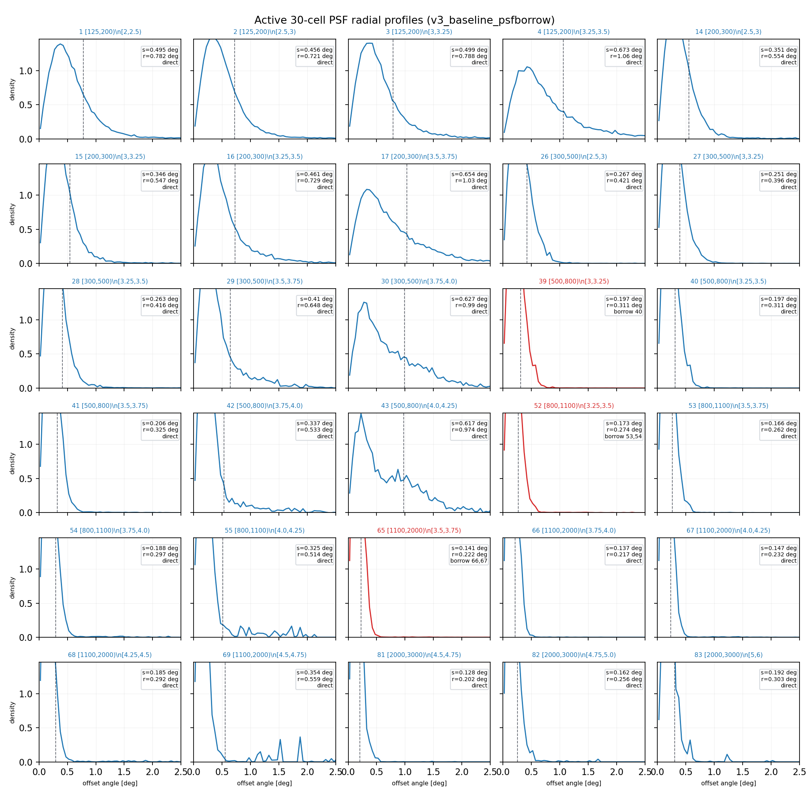


| cell | Nhit bin | predE bin | sigma deg | r_opt deg | containment | Neff | missing mass | PSF source | orig missing |
|---|---|---|---|---|---|---|---|---|---|
| 1 | [125,200) | [2,2.5) | 0.49469 | 0.78161 | 0.5589 | 10049 | 0 | direct | |
| 2 | [125,200) | [2.5,3) | 0.45642 | 0.72115 | 0.65652 | 69269 | 0 | direct | |
| 3 | [125,200) | [3,3.25) | 0.49862 | 0.78782 | 0.65493 | 34634 | 0 | direct | |
| 4 | [125,200) | [3.25,3.5) | 0.67297 | 1.0633 | 0.5926 | 22508 | 0 | direct | |
| 14 | [200,300) | [2.5,3) | 0.35079 | 0.55424 | 0.64972 | 10948 | 0 | direct | |
| 15 | [200,300) | [3,3.25) | 0.34612 | 0.54687 | 0.70287 | 21172 | 0 | direct | |
| 16 | [200,300) | [3.25,3.5) | 0.46123 | 0.72875 | 0.68536 | 16719 | 0 | direct | |
| 17 | [200,300) | [3.5,3.75) | 0.65384 | 1.0331 | 0.6527 | 14887 | 0 | direct | |
| 26 | [300,500) | [2.5,3) | 0.26672 | 0.42141 | 0.58438 | 807.09 | 0.02083 | direct | |
| 27 | [300,500) | [3,3.25) | 0.25069 | 0.39609 | 0.61962 | 4796.2 | 0 | direct | |
| 28 | [300,500) | [3.25,3.5) | 0.26305 | 0.41562 | 0.71034 | 11408 | 0 | direct | |
| 29 | [300,500) | [3.5,3.75) | 0.40997 | 0.64775 | 0.72233 | 10705 | 0 | direct | |
| 30 | [300,500) | [3.75,4.0) | 0.62663 | 0.99007 | 0.66425 | 8443.2 | 0 | direct | |
| 39 | [500,800) | [3,3.25) | 0.19668 | 0.31075 | 0.59057 | 0 | 0.12449 | borrowed from 40 | 0.12449 |
| 40 | [500,800) | [3.25,3.5) | 0.19668 | 0.31075 | 0.59057 | 740.47 | 0 | direct | |
| 41 | [500,800) | [3.5,3.75) | 0.20586 | 0.32525 | 0.70305 | 2505.2 | 0 | direct | |
| 42 | [500,800) | [3.75,4.0) | 0.33743 | 0.53313 | 0.75248 | 4809.2 | 0 | direct | |
| 43 | [500,800) | [4.0,4.25) | 0.61651 | 0.97408 | 0.66899 | 2826.2 | 0 | direct | |
| 52 | [800,1100) | [3.25,3.5) | 0.17329 | 0.2738 | 0.71521 | 0 | 0.22835 | borrowed from 53,54 | 0.22835 |
| 53 | [800,1100) | [3.5,3.75) | 0.16597 | 0.26223 | 0.68434 | 771.75 | 0.083091 | direct | |
| 54 | [800,1100) | [3.75,4.0) | 0.18793 | 0.29693 | 0.77695 | 1898.8 | 0 | direct | |
| 55 | [800,1100) | [4.0,4.25) | 0.32538 | 0.5141 | 0.84655 | 1581 | 0 | direct | |
| 65 | [1100,2000) | [3.5,3.75) | 0.14069 | 0.22229 | 0.72333 | 0 | 0.20758 | borrowed from 66,67 | 0.20758 |
| 66 | [1100,2000) | [3.75,4.0) | 0.13749 | 0.21723 | 0.7137 | 994.24 | 0.062391 | direct | |
| 67 | [1100,2000) | [4.0,4.25) | 0.14709 | 0.2324 | 0.74261 | 1111.7 | 0 | direct | |
| 68 | [1100,2000) | [4.25,4.5) | 0.18509 | 0.29243 | 0.87145 | 4260.3 | 0 | direct | |
| 69 | [1100,2000) | [4.5,4.75) | 0.3536 | 0.55869 | 0.79917 | 556.91 | 0 | direct | |
| 81 | [2000,3000) | [4.5,4.75) | 0.1281 | 0.20239 | 0.75951 | 797.56 | 0.041594 | direct | |
| 82 | [2000,3000) | [4.75,5.0) | 0.16202 | 0.25599 | 0.81021 | 1604.3 | 0 | direct | |
| 83 | [2000,3000) | [5,6) | 0.192 | 0.30336 | 0.70391 | 225.71 | 0 | direct |
theta_missing_crab_probability_mass measures the fraction of the Crab declination theta exposure for which a given cell has no MC support after applying that cell's Nhit/predE selection, true-energy range, finite-angle, and positive-weight requirements. It is not a measure of the total MC sample size; it is a coverage test on the conditional MC sample inside one cell.
The important lesson for v3 is that many MC events globally do not guarantee full theta coverage inside every fine Nhit x predE cell. The ridge-left cells 39, 52, and 65 have visible Crab excess and satisfy the MC occupancy ridge rule, but their Stage B PSF falls back because their conditional MC theta support misses more than 10% of the Crab theta exposure. Current values are approximately 0.124, 0.228, and 0.208, respectively.
These cells are the left shoulder of the ridge: high Nhit but lower predicted energy than the row peak. That combination can be more sensitive to zenith angle, shower geometry, and NN response residuals, so its theta support can be less continuous than the neighboring right-shoulder cells. In contrast, adjacent cells 40, 53, and 66 pass with missing masses near 0.000, 0.083, and 0.062.
A follow-up audit of cell 39 shows that the fallback summary row can be misleading: fallback rows reset diagnostic counters such as logE_range_events to zero. The underlying ROOT files for cell 39 contain 27,733 positive-weight events in log10(mc_energy)=[2,6) out of 27,769 total events. The problem is therefore not the true-energy window; it is sparse high-theta support after Crab-declination reweighting.
For cell 39, the missing 1-degree theta bins are all in the high-theta tail: 40-41, 41-42, 43-44, 45-46, 46-47, and 48-49 deg, totaling 0.12449 Crab theta probability mass. With 2-degree theta bins the missing mass drops to 0.04146 and only 40-42 deg is unsupported, but the reweighted effective event count falls to 108.29, below the Stage B threshold of 200. Wider theta bins remove the missing-bin flag, but the effective event count remains lower because a very small number of high-theta MC events receives large weights.
The selector decision is therefore: keep 39/52/65 in the frozen physical-ridge cell list, but do not use their fallback PSF as nominal. The dedicated v3_psfborrow systematic replaces their active PSF with neighboring ridge PSFs while preserving the original missing-support diagnostics in metadata and summary tables.
The active PSF systematic uses 39 -> 40, 52 -> 2/3*53 + 1/3*54, and 65 -> 2/3*66 + 1/3*67. It keeps 39/52/65 in the fit selector and continues to exclude high-Nhit edge cells such as 79/80. This branch is explicitly a PSF systematic, not a nominal v3 promotion.
v3_psfborrow. It starts from nominal Stage B psf_v3_candidate.npz, writes a separate Stage B artifact under stage_b_v3_candidate_psfborrow, and reruns Stage D/E/F/G into *_psfborrow output roots. It does not overwrite nominal v3 or promote this result as nominal.
| cell | method | borrowed_from | weights | orig missing | orig Neff | orig sigma | borrow sigma | borrow r_opt | borrow containment | source PSF |
|---|---|---|---|---|---|---|---|---|---|---|
| 39 | nearest_neighbor_borrow | 40 | 40:1 | 0.12449 | 0 | 1 | 0.19668 | 0.31075 | 0.59057 | 40 sigma=0.19668 r=0.31075 c=0.59057 Neff=740.47 |
| 52 | nearest_neighbor_weighted_interpolation | 53,54 | 53:0.6667,54:0.3333 | 0.22835 | 0 | 1 | 0.17329 | 0.2738 | 0.71521 | 53 sigma=0.16597 r=0.26223 c=0.68434 Neff=771.75; 54 sigma=0.18793 r=0.29693 c=0.77695 Neff=1898.8 |
| 65 | nearest_neighbor_weighted_interpolation | 66,67 | 66:0.6667,67:0.3333 | 0.20758 | 0 | 1 | 0.14069 | 0.22229 | 0.72333 | 66 sigma=0.13749 r=0.21723 c=0.7137 Neff=994.24; 67 sigma=0.14709 r=0.2324 c=0.74261 Neff=1111.7 |
| selector | cells | included | added vs nominal result | removed vs nominal result | added vs nominal selector | removed vs nominal selector | status |
|---|---|---|---|---|---|---|---|
| nominal selector file | 30 | 1,2,3,4,14,15,16,17,26,27,28,29,30,39,40,41,42,43,52,53,54,55,65,66,67,68,69,81,82,83 | selector frozen; fit/SED pending rerun | ||||
| v3_baseline_psfborrow | 30 | 1,2,3,4,14,15,16,17,26,27,28,29,30,39,40,41,42,43,52,53,54,55,65,66,67,68,69,81,82,83 | 1,26,39,52,65 | 31,44,56,57,70,80 | none | none | selector/result matched |
| stage | run | status | artifact |
|---|---|---|---|
| B | v3_psfborrow_from_nominal | promoted | ../output/stage_b_v3_candidate_psfborrow/runs/v3_psfborrow_from_nominal/psf_v3_candidate_metadata.json |
| D | v3_stage_d_psfborrow_slurm_42029 | skipped | ../output/stage_d_v3_candidate_psfborrow/runs/v3_stage_d_psfborrow_slurm_42029/background_v3_candidate_psfborrow_metadata.json |
| E | v3_stage_e_psfborrow_slurm_42029 | skipped_no_promote_current | ../output/stage_e_v3_candidate_psfborrow/runs/v3_stage_e_psfborrow_slurm_42029/signal_v3_candidate_psfborrow_metadata.json |
| F | v3_stage_f_psfborrow_slurm_42029 | skipped_no_promote_current | ../output/stage_f_v3_baseline_psfborrow/runs/v3_stage_f_psfborrow_slurm_42029/fit_v3_baseline_psfborrow_metadata.json |
| G | v3_stage_g_psfborrow_slurm_42029 | skipped_no_promote_current | ../output/stage_g_v3_baseline_psfborrow/runs/v3_stage_g_psfborrow_slurm_42029/sed_points_v3_baseline_psfborrow_metadata.json |
| version | run | cells | added | removed | model | error | phi0 (delta) | gamma/alpha (delta) | beta (delta) | chi2/ndof | delta chi2 | SED pts |
|---|---|---|---|---|---|---|---|---|---|---|---|---|
| nominal reference | v3_stage_f_slurm_42024 | 31 | LogPar | conservative | 3.170357e-12 | 2.7382 | 0.108 | 233.76 / 28 | 233.76 | 17 | ||
| PSF systematic | v3_stage_f_psfborrow_slurm_42029 | 30 | 1,26,39,52,65 | 31,44,56,57,70,80 | LogPar | conservative | 3.013387e-12 (-1.569707e-13, -0.04951) | 2.8016 (0.063331, 0.02313) | 0.1328 (0.024799, 0.2296) | 264.29 / 27 | 264.29 (30.533, 0.1306) | 18 |
| grouping | group | cells | E_eff TeV | E2 dN/dE | err | ratio StageF |
|---|---|---|---|---|---|---|
| nhit | [125,200) | 1,2,3,4 | 0.56018 (-0.097627, -0.1484) | 7.63231e-11 (3.40210e-12, 0.04665) | 4.5873e-12 | 1.066 (-0.003436, -0.003214) |
| nhit | [200,300) | 14,15,16,17 | 0.8495 (-6.69354e-04, -7.8732e-04) | 6.35637e-11 (4.44996e-13, 0.00705) | 2.5277e-12 | 1.053 (0.01776, 0.01716) |
| nhit | [300,500) | 26,27,28,29,30 | 1.3395 (-0.27742, -0.1716) | 4.96100e-11 (3.20309e-12, 0.06902) | 1.4099e-12 | 1.045 (-0.02905, -0.02705) |
| nhit | [500,800) | 39,40,41,42,43 | 2.4427 (-0.33303, -0.12) | 3.11220e-11 (2.98713e-12, 0.1062) | 1.0456e-12 | 0.9787 (0.04705, 0.05051) |
| nhit | [800,1100) | 52,53,54,55 | 4.3544 (-0.80314, -0.1557) | 1.84091e-11 (1.75558e-12, 0.1054) | 9.6625e-13 | 0.932 (0.03328, 0.03703) |
| nhit | [1100,2000) | 65,66,67,68,69 | 8.5691 (-1.9811, -0.1878) | 8.23285e-12 (-6.94412e-13, -0.07779) | 6.1379e-13 | 0.815 (-0.1241, -0.1322) |
| nhit | [2000,3000) | 81,82,83 | 47.488 (8.0868, 0.2052) | 1.68600e-12 (-3.89597e-13, -0.1877) | 8.7771e-13 | 1.567 (0.5701, 0.5721) |
| predE | [2,2.5) | 1 | 0.32141 | 7.99067e-11 | 1.2341e-11 | 0.9538 |
| predE | [2.5,3) | 2,14,26 | 0.66405 (0.025236, 0.0395) | 6.20467e-11 (-5.88612e-13, -0.009397) | 2.2067e-12 | 0.9239 (0.01653, 0.01821) |
| predE | [3,3.25) | 3,15,27,39 | 1.2866 (0.023001, 0.0182) | 5.34171e-11 (-2.19767e-12, -0.03952) | 1.6745e-12 | 1.099 (-0.01705, -0.01528) |
| predE | [3.25,3.5) | 4,16,28,40,52 | 2.1718 (0.056779, 0.02685) | 3.46183e-11 (-1.62561e-12, -0.04485) | 1.1702e-12 | 0.999 (0.004637, 0.004663) |
| predE | [3.5,3.75) | 17,29,41,53,65 | 3.781 (0.10646, 0.02897) | 2.02781e-11 (-2.77479e-12, -0.1204) | 8.9269e-13 | 0.9065 (-0.03611, -0.03831) |
| predE | [3.75,4.0) | 30,42,54,66 | 6.6352 (-0.11474, -0.017) | 1.48429e-11 (4.28246e-13, 0.02971) | 9.5678e-13 | 1.124 (0.1374, 0.1392) |
| predE | [4.0,4.25) | 43,55,67 | 11.457 (0.068487, 0.006014) | 1.07538e-11 (-3.79723e-13, -0.03411) | 1.1084e-12 | 1.473 (0.2073, 0.1637) |
| predE | [4.25,4.5) | 68 | 18.721 (-0.95066, -0.04833) | 5.09249e-12 (1.28813e-13, 0.02595) | 1.4267e-12 | 1.272 (0.2502, 0.2449) |
| predE | [4.5,4.75) | 69,81 | 33.077 (-1.8043, -0.05173) | 4.05009e-12 (2.92725e-13, 0.07791) | 1.4392e-12 | 2.198 (0.6547, 0.4242) |
| predE | [4.75,5.0) | 82 | 63.193 (2.635, 0.04351) | 2.64147e-12 (-1.17854e-13, -0.04271) | 2.1893e-12 | 3.847 (1.49, 0.6319) |
| predE | [5,6) | 83 | 56.716 (-20.397, -0.2645) | 1.64627e-11 (4.80651e-12, 0.4124) | 9.0869e-12 | 20.17 (6.161, 0.4397) |
| role | cells |
|---|---|
| baseline_fit | 30 |
| diagnostic_high_energy_probe | 13 |
| diagnostic_low_stat | 1 |
| diagnostic_response_tail | 13 |
| systematics_probe | 27 |
v3_baseline included cells: 1,2,3,4,14,15,16,17,26,27,28,29,30,39,40,41,42,43,52,53,54,55,65,66,67,68,69,81,82,83
excluded / diagnostic cells: 5,6,7,8,9,10,11,12,13,18,19,20,21,22,23,24,25,31,32,33,34,35,36,37,38,44,45,46,47,48,49,50,51,56,57,58,59,60,61,62,63,64,70,71,72,73,74,75,76,77,78,79,80,84
high-energy probe cells: 11,12,23,24,35,36,47,48,59,60,72,79,80,81,82,83
n/aavailableslurm_42023promotedv3_stage_c_slurm_42024promotedv3_stage_d_slurm_42024skippedv3_stage_e_slurm_42024skipped_no_promote_currentv3_stage_f_slurm_42024skipped_no_promote_currentv3_stage_g_slurm_42024skipped_no_promote_current| grouping | group | cells | E_eff TeV | E2 dN/dE | err | TS/sigma | ratio StageF |
|---|---|---|---|---|---|---|---|
| nhit | [125,200) | 2,3,4 | 0.65781 | 7.29210e-11 | 4.7497e-12 | 0.9913 | 1.069 |
| nhit | [200,300) | 14,15,16,17 | 0.85017 | 6.31187e-11 | 2.5064e-12 | 0.861 | 1.035 |
| nhit | [300,500) | 27,28,29,30,31 | 1.6169 | 4.64069e-11 | 1.4838e-12 | 2.154 | 1.074 |
| nhit | [500,800) | 40,41,42,43,44 | 2.7757 | 2.81349e-11 | 1.0662e-12 | -1.935 | 0.9317 |
| nhit | [800,1100) | 53,54,55,56,57 | 5.1575 | 1.66535e-11 | 1.0514e-12 | -1.784 | 0.8988 |
| nhit | [1100,2000) | 66,67,68,69,70 | 10.55 | 8.92726e-12 | 6.8667e-13 | -0.8427 | 0.9391 |
| nhit | [2000,3000) | 80,81,82,83 | 39.401 | 2.07559e-12 | 1.0688e-12 | -0.006825 | 0.9965 |
| predE | [2.5,3) | 2,14 | 0.63881 | 6.26353e-11 | 2.7744e-12 | -2.306 | 0.9073 |
| predE | [3,3.25) | 3,15,27 | 1.2636 | 5.56148e-11 | 1.9291e-12 | 2.998 | 1.116 |
| predE | [3.25,3.5) | 4,16,28,40 | 2.115 | 3.62440e-11 | 1.3130e-12 | -0.1564 | 0.9944 |
| predE | [3.5,3.75) | 17,29,41,53 | 3.6745 | 2.30529e-11 | 1.0256e-12 | -1.369 | 0.9426 |
| predE | [3.75,4.0) | 30,42,54,66 | 6.7499 | 1.44146e-11 | 9.3187e-13 | -0.2047 | 0.9869 |
| predE | [4.0,4.25) | 31,43,55,67 | 11.389 | 1.11335e-11 | 1.0912e-12 | 2.144 | 1.266 |
| predE | [4.25,4.5) | 44,56,68,80 | 19.672 | 4.96368e-12 | 1.2986e-12 | 0.08076 | 1.022 |
| predE | [4.5,4.75) | 57,69,81 | 34.881 | 3.75736e-12 | 1.2860e-12 | 1.028 | 1.543 |
| predE | [4.75,5.0) | 70,82 | 60.558 | 2.75932e-12 | 2.3172e-12 | 0.6857 | 2.357 |
| predE | [5,6) | 83 | 77.114 | 1.16562e-11 | 6.4338e-12 | 1.682 | 14.01 |
1484.4 days. All seven rows have Error_status=3, no upper-limit rows, and empty stderr in the external run summary. The table preserves the official dN/dE values and adds E^2 dN/dE only for comparison with this report's Stage G diagnostic convention. No error bars are drawn for these official points because no uncertainty columns were provided in the transferred summary.
Source package: wcda_crab_sed_pass5_20260616_104941/final_wcda_crab_sed_pass5.tar.gz; source table: wcda_crab_sed_pass5_20260616_104941/final_wcda_crab_sed_pass5/sed_J0534+2200.txt.
| E TeV | dN/dE | E2 dN/dE | TS | Nhit | Error_status | upper limit | stderr empty |
|---|---|---|---|---|---|---|---|
| 0.56 | 1.3990e-10 | 4.3873e-11 | 12297 | 30-60 | 3 | false | true |
| 0.89 | 5.0940e-11 | 4.0350e-11 | 38690 | 60-100 | 3 | false | true |
| 1.41 | 1.6480e-11 | 3.2764e-11 | 1.08613e+05 | 100-200 | 3 | false | true |
| 2.51 | 3.6710e-12 | 2.3128e-11 | 77286 | 200-300 | 3 | false | true |
| 3.98 | 1.0330e-12 | 1.6363e-11 | 68603 | 300-500 | 3 | false | true |
| 7.94 | 1.4710e-13 | 9.2737e-12 | 28981 | 500-800 | 3 | false | true |
| 15.85 | 1.9440e-14 | 4.8838e-12 | 11298 | >800 | 3 | false | true |
v0.99 produced seven WCDA-only Crab SED points from results/SED_Mor/Crab_SED.txt. The transferred table reports energy flux ferrL ferrU TS WCDAtag; the flux scale matches E^2 dN/dE in units of 1e-14 TeV cm^-2 s^-1, so this report stores the raw scaled values and converts them to physical E^2 dN/dE for overlays. All points are WCDA tagged and Crab component/bin/flux-point validation is OK; ROOT output opens and SHA256 verification passed.
Package: /home/lhaaso/liushijie/energy/wcda_crab_sed_v099_20250731_20260616_123624/final_wcda_crab_sed_v099_20250731.tar.gz. Fit cluster: 2832848; SED cluster: 2832858. README warnings for Halo_2_Ecut and Halo_2_F0 are boundary/upper-limit related and do not affect the listed Crab SED/TS status.
| E TeV | E2 flux raw | E2 dN/dE | err low | err high | TS | WCDAtag | status |
|---|---|---|---|---|---|---|---|
| 0.581 | 4642.68 | 4.6427e-11 | 4.4084e-13 | 4.4084e-13 | 11740 | 1 | ok |
| 0.879 | 4280.92 | 4.2809e-11 | 2.3824e-13 | 2.3824e-13 | 37587 | 1 | ok |
| 1.423 | 3429.83 | 3.4298e-11 | 1.3369e-13 | 1.3369e-13 | 1.06355e+05 | 1 | ok |
| 2.361 | 2538.75 | 2.5388e-11 | 1.4451e-13 | 1.4451e-13 | 78318 | 1 | ok |
| 3.813 | 1830.23 | 1.8302e-11 | 1.2151e-13 | 1.2151e-13 | 77558 | 1 | ok |
| 7.106 | 1107.71 | 1.1077e-11 | 1.3309e-13 | 1.3309e-13 | 33532 | 1 | ok |
| 14.38 | 581.427 | 5.8143e-12 | 1.1811e-13 | 1.1811e-13 | 12055 | 1 | ok |
| variant | annulus | order | fit family | B_on | excess | sigma | valid cells | LogPar phi0 | alpha | beta | chi2 |
|---|---|---|---|---|---|---|---|---|---|---|---|
| nominal_shifted_order2 | PSF-shifted | 2 | weighted_least_squares | 92981.3 | 17562.7 | 55.912 | 27 | 3.178959e-12 | 2.7382 | 0.12023 | 220.95 |
| default_annulus_order2 | 1.5-3.5 deg | 2 | weighted_least_squares | 93020.5 | 17523.5 | 55.78 | 27 | 3.156252e-12 | 2.7316 | 0.11566 | 226.11 |
| shifted_annulus_order2 | PSF-shifted | 2 | weighted_least_squares | 92981.3 | 17562.7 | 55.912 | 27 | 3.178959e-12 | 2.7382 | 0.12023 | 220.95 |
| default_annulus_order1 | 1.5-3.5 deg | 1 | weighted_least_squares | 91826.7 | 18717.3 | 59.83 | 27 | 3.136519e-12 | 2.7405 | 0.09707 | 249.65 |
| shifted_annulus_order1 | PSF-shifted | 1 | weighted_least_squares | 91309.6 | 19234.4 | 61.595 | 27 | 3.124701e-12 | 2.7422 | 0.088671 | 271.62 |
| shifted_annulus_log_link_order2 | PSF-shifted | 2 | poisson_log_link_positive | 96536.9 | 14007.1 | 44.053 | 27 | 2.737911e-12 | 2.7917 | 0.12729 | 110.91 |
High-energy predE groups: [4.0,4.25), [4.25,4.5), [4.5,4.75), [4.75,5.0), [5,6)
| item | status | evidence |
|---|---|---|
| baseline_stage_a_to_g | complete | /mnt/mydisk/server/projects/energy_reconstruction/apply/output/stage_g_v3_baseline/runs/v3_stage_g_mc_ridge_psf/sed_points_v3_baseline_metadata.json |
| active_30cell_psfborrow_stage_a_to_g | complete | /mnt/mydisk/server/projects/energy_reconstruction/apply/output/stage_g_v3_baseline_psfborrow/runs/v3_stage_g_psfborrow_slurm_42029/sed_points_v3_baseline_psfborrow_metadata.json |
| baseline_vs_expanded_selector_stage_f_g | complete | /mnt/mydisk/server/projects/energy_reconstruction/apply/output/stage_f_v3_systematics_selector/runs/v3_stage_f_systematics_selector/fit_v3_systematics_metadata.json |
| central98_995_selector_audit | prefit_selector_audit_complete | /mnt/mydisk/server/projects/energy_reconstruction/apply/report/assets/v3-validation/v3_selector_systematics_summary.csv |
| stage_a_response_histogram_self_closure | complete | /mnt/mydisk/server/projects/energy_reconstruction/apply/report/assets/v3-validation/v3_response_closure_summary.csv |
| mc_reference_forward_fold_truth_closure | complete | /mnt/mydisk/server/projects/energy_reconstruction/apply/report/assets/v3-validation/v3_mc_reference_forward_fold_closure.csv |
| off_source_fake_source_validation | failed | /mnt/mydisk/server/projects/energy_reconstruction/apply/report/assets/v3-validation/v3_offsource_fake_source_summary.csv |
| time_split_background_stability | complete | /mnt/mydisk/server/projects/energy_reconstruction/apply/report/assets/v3-validation/v3_time_split_summary.csv |
This selector audit is now keyed to the active v3_baseline_psfborrow 30-cell branch. The nominal 27-cell reference is kept only to show the pre-borrow state, while the 62-cell expanded selector remains a stress test for adding many central99 cells.
| selector | cells | low Nhit | HE overlap | added vs active30 | removed vs active30 | added ids | removed ids |
|---|---|---|---|---|---|---|---|
| active_psfborrow_30cell | 30 | 4 | 3 | 0 | 0 | ||
| nominal_reference_27cell | 27 | 4 | 3 | 0 | 3 | 39,52,65 | |
| expanded_selector_central99 | 62 | 11 | 10 | 32 | 0 | 5,6,7,8,9,10,11,13,18,19,20,21,22,23,31,32,33,34,35,44,45,46,47,51,56,57,58,59,64,70,79,80 | |
| high_energy_probe_selector | 16 | 2 | 16 | 13 | 27 | 11,12,23,24,35,36,47,48,59,60,72,79,80 | 1,2,3,4,14,15,16,17,26,27,28,29,30,39,40,41,42,43,52,53,54,55,65,66,67,68,69 |
| computed_baseline_central98 | 27 | 4 | 3 | 0 | 3 | 39,52,65 | |
| computed_baseline_central99 | 27 | 4 | 3 | 0 | 3 | 39,52,65 | |
| computed_baseline_central995 | 27 | 4 | 3 | 0 | 3 | 39,52,65 |
| fit | status | cells | model | phi0 | gamma | alpha | beta | chi2/ndof | SED pts | HE pts | max Eeff TeV |
|---|---|---|---|---|---|---|---|---|---|---|---|
| active_psfborrow_30cell | passed | 30 | LogPar | 3.013387e-12 | n/a | 2.8016 | 0.1328 | 264.29 / 27 | 18 | 1 | 63.193 |
| nominal_reference_27cell | passed | 27 | LogPar | 3.178959e-12 | n/a | 2.7382 | 0.12023 | 220.95 / 24 | 18 | 1 | 73.817 |
| expanded_selector_central99 | passed | 62 | LogPar | 3.375855e-12 | n/a | 2.7196 | 0.12344 | 999.21 / 59 | 18 | 1 | 72.515 |
| selector | cells | rel count | max cell count | rel sumw | max cell sumw | max sum eta |
|---|---|---|---|---|---|---|
| all_candidate_cells | 84 | -6.9843e-11 | 7.9478e-09 | 4.2793e-11 | 7.6033e-09 | 0.2 |
| active_psfborrow_30cell | 30 | -1.9647e-10 | 4.1261e-09 | 4.1895e-11 | 4.8588e-09 | 0.028571 |
| nominal_reference_27cell | 27 | -1.0892e-10 | 4.1261e-09 | 1.3676e-10 | 4.6007e-09 | 0.028571 |
| expanded_selector_central99 | 62 | -7.2601e-11 | 7.9478e-09 | 4.0762e-11 | 7.6033e-09 | 0.2 |
| high_energy_probe_selector | 16 | 5.8112e-10 | 6.5629e-09 | 1.3986e-10 | 6.5629e-09 | 0.16667 |
| computed_baseline_central98 | 27 | -1.0892e-10 | 4.1261e-09 | 1.3676e-10 | 4.6007e-09 | 0.028571 |
| computed_baseline_central99 | 27 | -1.0892e-10 | 4.1261e-09 | 1.3676e-10 | 4.6007e-09 | 0.028571 |
| computed_baseline_central995 | 27 | -1.0892e-10 | 4.1261e-09 | 1.3676e-10 | 4.6007e-09 | 0.028571 |
| selector | cells | rel count | rel sumw | truth count | pred count |
|---|---|---|---|---|---|
| all_candidate_cells | 84 | -6.9843e-11 | 4.2793e-11 | 2.260184e+06 | 2.260184e+06 |
| active_psfborrow_30cell | 30 | -1.9647e-10 | 4.1895e-11 | 1.938245e+06 | 1.938245e+06 |
| nominal_reference_27cell | 27 | -1.0892e-10 | 1.3676e-10 | 1.883771e+06 | 1.883771e+06 |
| expanded_selector_central99 | 62 | -7.2601e-11 | 4.0762e-11 | 2.256739e+06 | 2.256739e+06 |
| high_energy_probe_selector | 16 | 5.8112e-10 | 1.3986e-10 | 1.350620e+05 | 1.350620e+05 |
| computed_baseline_central98 | 27 | -1.0892e-10 | 1.3676e-10 | 1.883771e+06 | 1.883771e+06 |
| computed_baseline_central99 | 27 | -1.0892e-10 | 1.3676e-10 | 1.883771e+06 | 1.883771e+06 |
| computed_baseline_central995 | 27 | -1.0892e-10 | 1.3676e-10 | 1.883771e+06 | 1.883771e+06 |
| validation | run | RA | MJD min | MJD max | baseline N | baseline B | baseline excess | baseline sigma |
|---|---|---|---|---|---|---|---|---|
| offsource_1 | v3_stage_e_offsource_ra93p63 | 93.63 | n/a | n/a | 3,084 | 5858.39 | -2774.39 | -46.441 |
| offsource_2 | v3_stage_e_offsource_ra73p63 | 73.63 | n/a | n/a | 3,793 | 6662.13 | -2869.13 | -45.141 |
| validation | run | MJD min | MJD max | baseline N | baseline B | baseline excess | baseline sigma | all sigma |
|---|---|---|---|---|---|---|---|---|
| time_split_1 | v3_stage_e_time_first | 59579.7 | 59609.2 | 58,167 | 47369.4 | 10797.6 | 74.83 | 53.564 |
| time_split_2 | v3_stage_e_time_second | 59609.2 | 59638.7 | 58,384 | 47270.3 | 11113.7 | 75.993 | 55.056 |
The MC reference forward-fold closure uses the Stage A binned MC numerator as the truth definition and folds the denominator through the stored response; it is a production response closure, not an independent holdout sample. Off-source fake-source controls and time-split Stage D/E runs are listed explicitly; failed controls are kept in the report rather than folded back into the frozen selector.
This final diagnostic addresses the current flux normalization tension directly. The official pass5 Nhit SED and tutorial v0.99 WCDA-only SED are treated as external spectral hypotheses, interpolated in log-log space as piecewise power laws, and forward-folded through our Stage A A_eff(E_true, theta), Stage F Crab-visible theta exposure, and per-cell containment_r_opt. The resulting expected cell counts are compared to the Stage E excess table from the active v3_baseline_psfborrow 30-cell branch.
Result: active30 Stage E excess remains above the official expectation in most cells. Against pass5, total observed/expected is 1.6551 with 28/30 cells above 1 and 16/30 above 1.5. Against tutorial v0.99, total observed/expected is 1.5557 with 28/30 cells above 1 and 14/30 above 1.5.
The fake-source check gives the opposite sign from a simple "background too low everywhere" explanation. At RA 93.63 deg and 73.63 deg with Dec fixed to Crab, the active30 core residuals are strongly negative: the two totals are approximately -2774 and -2869 counts, with combined known-background significances around -46 and -45. These off-source controls therefore do not show positive residuals; they argue against a generic 2D background underprediction in source-free positions, while leaving a source-local response/background-normalization mismatch as the remaining issue.
| run | spectrum | cells | excess | expected | obs/exp | median cell obs/exp | cells >1 | cells >1.5 | visible days |
|---|---|---|---|---|---|---|---|---|---|
| active_psfborrow_30cell | official_pass5 | 30 | 18082.6 | 10925.1 | 1.6551 | 1.5472 | 28 | 16 | 15.612 |
| active_psfborrow_30cell | tutorial_v099 | 30 | 18082.6 | 11623.5 | 1.5557 | 1.4523 | 28 | 14 | 15.612 |
| legacy_nominal_stagef31 | official_pass5 | 31 | 15525.5 | 9074.09 | 1.711 | 1.7727 | 28 | 18 | 15.612 |
| legacy_nominal_stagef31 | tutorial_v099 | 31 | 15525.5 | 9648.66 | 1.6091 | 1.6282 | 27 | 17 | 15.612 |
| spectrum | Nhit bin | cells | excess | expected | obs/exp | median cell obs/exp | cells >1 | cells >1.5 |
|---|---|---|---|---|---|---|---|---|
| official_pass5 | [1100,2000) | 5 | 299.661 | 258.819 | 1.1578 | 1.206 | 4 | 1 |
| official_pass5 | [125,200) | 4 | 6403.03 | 3684.4 | 1.7379 | 1.9567 | 4 | 4 |
| official_pass5 | [200,300) | 4 | 4940.99 | 2781.06 | 1.7767 | 2.4146 | 4 | 3 |
| official_pass5 | [2000,3000) | 3 | 19.4601 | 8.78594 | 2.2149 | 1.9084 | 2 | 2 |
| official_pass5 | [300,500) | 5 | 4147.59 | 2506.72 | 1.6546 | 1.5034 | 5 | 3 |
| official_pass5 | [500,800) | 5 | 1702.89 | 1247.83 | 1.3647 | 1.3771 | 5 | 2 |
| official_pass5 | [800,1100) | 4 | 568.943 | 437.487 | 1.3005 | 1.2146 | 4 | 1 |
| tutorial_v099 | [1100,2000) | 5 | 299.661 | 281.039 | 1.0663 | 1.1045 | 4 | 1 |
| tutorial_v099 | [125,200) | 4 | 6403.03 | 3928.67 | 1.6298 | 1.8442 | 4 | 3 |
| tutorial_v099 | [200,300) | 4 | 4940.99 | 2950.78 | 1.6745 | 2.2808 | 4 | 3 |
| tutorial_v099 | [2000,3000) | 3 | 19.4601 | 9.72493 | 2.0011 | 1.719 | 2 | 2 |
| tutorial_v099 | [300,500) | 5 | 4147.59 | 2653.78 | 1.5629 | 1.4247 | 5 | 2 |
| tutorial_v099 | [500,800) | 5 | 1702.89 | 1327.93 | 1.2824 | 1.3055 | 5 | 2 |
| tutorial_v099 | [800,1100) | 4 | 568.943 | 471.626 | 1.2063 | 1.1226 | 4 | 1 |
| cell | Nhit bin | predE bin | excess | expected | obs/exp | pull |
|---|---|---|---|---|---|---|
| 83 | [2000,3000) | [5,6) | 10.2142 | 1.03269 | 9.8908 | 1.6285 |
| 30 | [300,500) | [3.75,4.0) | 354.053 | 60.7262 | 5.8303 | 7.7624 |
| 69 | [1100,2000) | [4.5,4.75) | 28.8734 | 4.98056 | 5.7972 | 3.0072 |
| 17 | [200,300) | [3.5,3.75) | 499.915 | 100.646 | 4.967 | 6.0315 |
| 55 | [800,1100) | [4.0,4.25) | 73.6798 | 21.0888 | 3.4938 | 4.5043 |
| 43 | [500,800) | [4.0,4.25) | 53.8146 | 19.052 | 2.8246 | 2.0199 |
| 29 | [300,500) | [3.5,3.75) | 477.916 | 176.175 | 2.7127 | 7.3224 |
| 16 | [200,300) | [3.25,3.5) | 591.37 | 225.529 | 2.6222 | 5.0517 |
| 4 | [125,200) | [3.25,3.5) | 412.724 | 157.499 | 2.6205 | 2.1021 |
| 3 | [125,200) | [3,3.25) | 853.737 | 396.921 | 2.1509 | 3.3983 |
| fake source | selector | cells | N_on | B_on | excess | combined sigma | positive cells | negative cells |
|---|---|---|---|---|---|---|---|---|
| offsource_ra93p63 | active_psfborrow_30cell | 30 | 3,084 | 5858.39 | -2774.39 | -46.441 | 1 | 29 |
| offsource_ra93p63 | legacy_nominal_stagef31 | 31 | 2,494 | 4347.05 | -1853.05 | -32.602 | 2 | 29 |
| offsource_ra73p63 | active_psfborrow_30cell | 30 | 3,793 | 6662.13 | -2869.13 | -45.141 | 2 | 25 |
| offsource_ra73p63 | legacy_nominal_stagef31 | 31 | 2,913 | 4765.94 | -1852.94 | -31.873 | 2 | 26 |
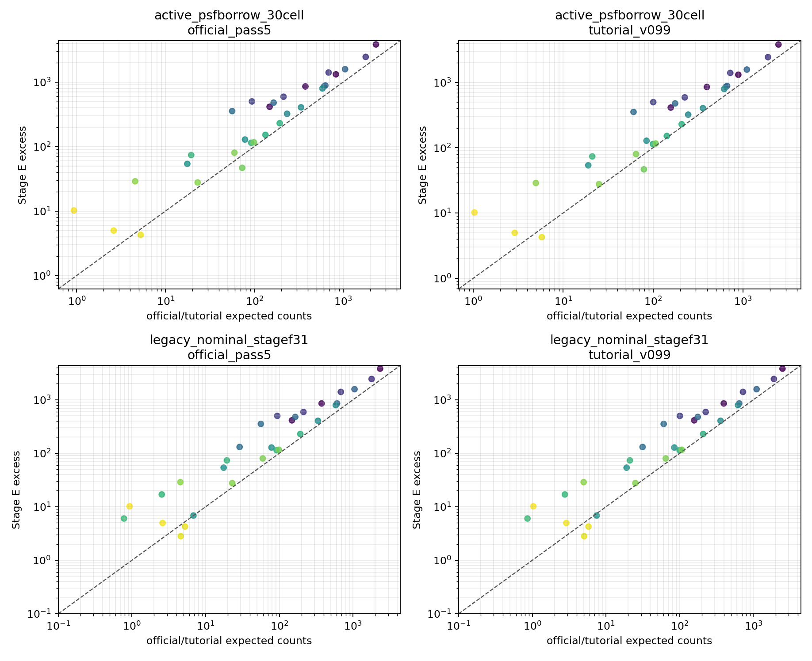
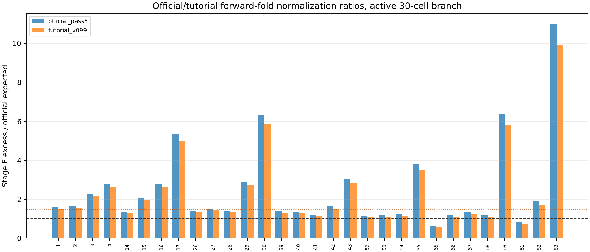
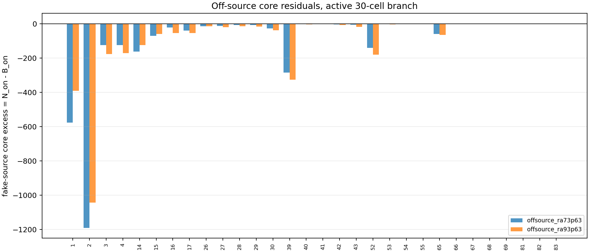
Diagnostic status flags: official forward-fold = stage_e_excess_above_official_forward_fold; fake-source core residual = fake_sources_do_not_show_positive_core_residuals. Output assets live under assets/v3-normalization-diagnostics.
rho=6 deg fiducial ROI，中心标记是 Crab。空白或破碎 panel 通常来自 excluded diagnostic/probe cells 的零统计或低统计，不代表 baseline fit cells 全部失败。先看 counts 和 training mask，再看 fitted background、annulus residual，最后看 excess 和 Stage F/G 结果。


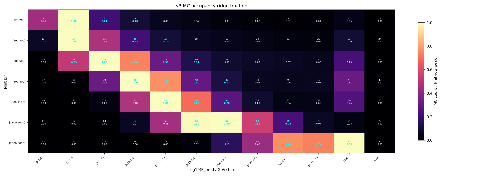


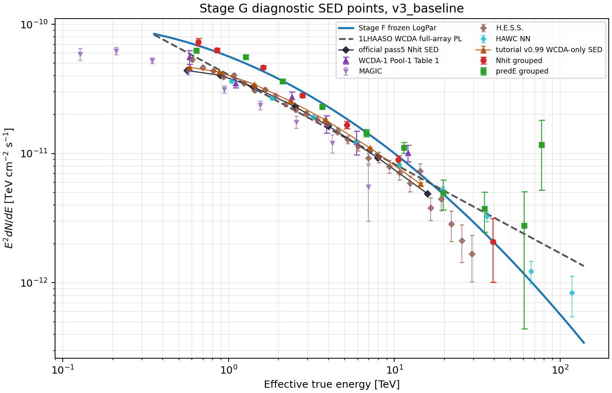
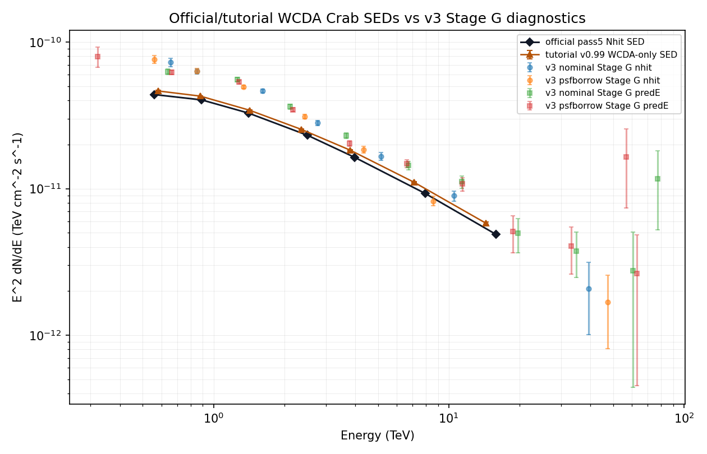


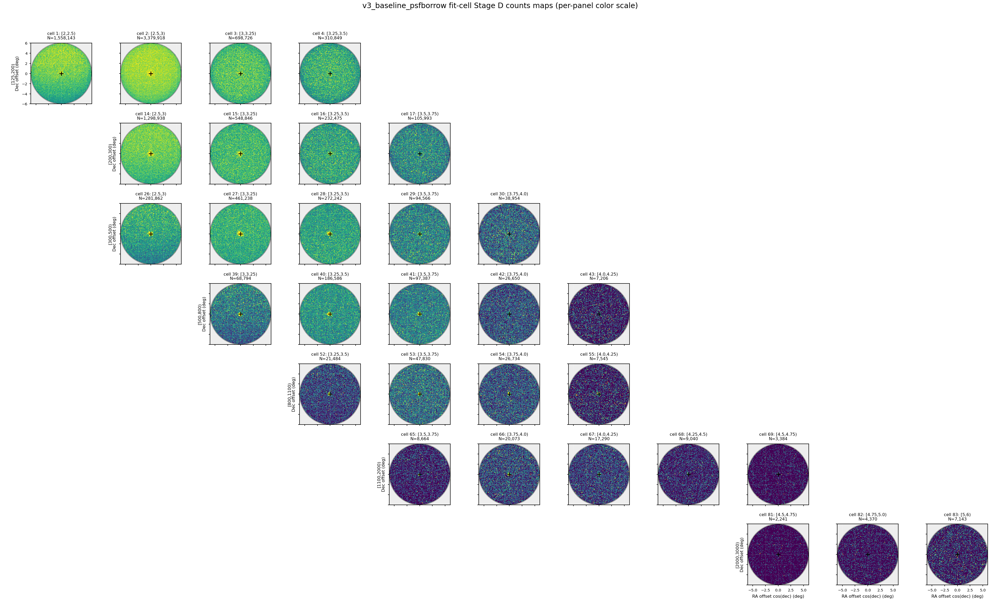
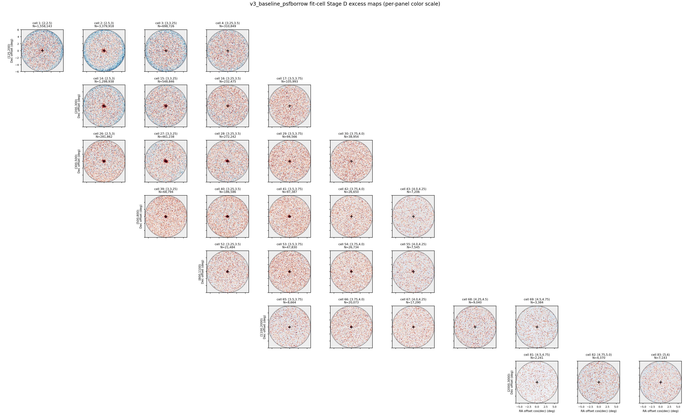
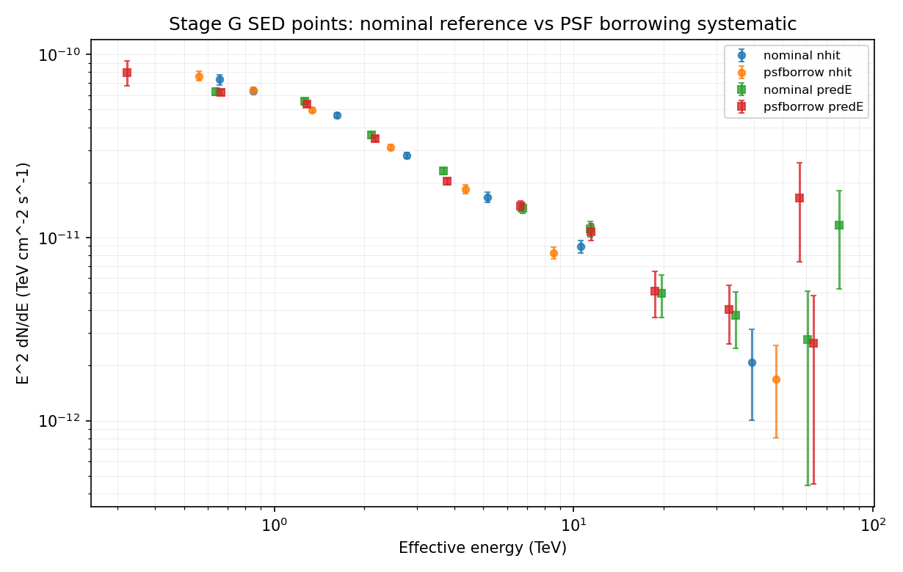
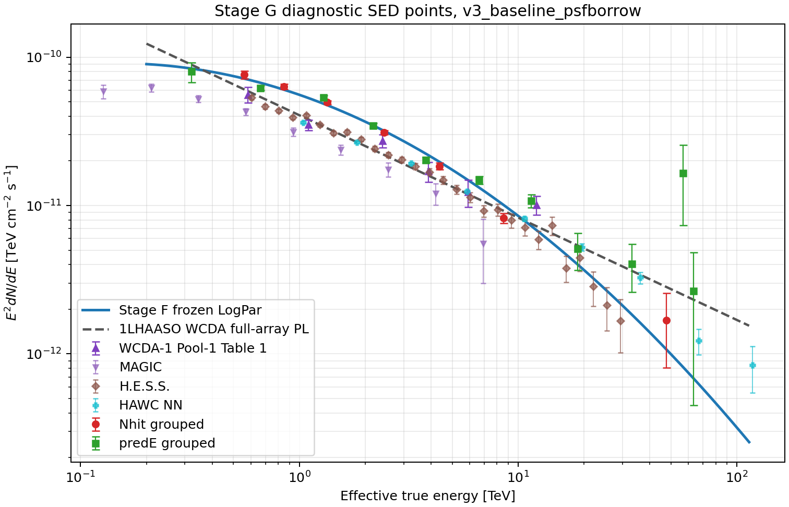
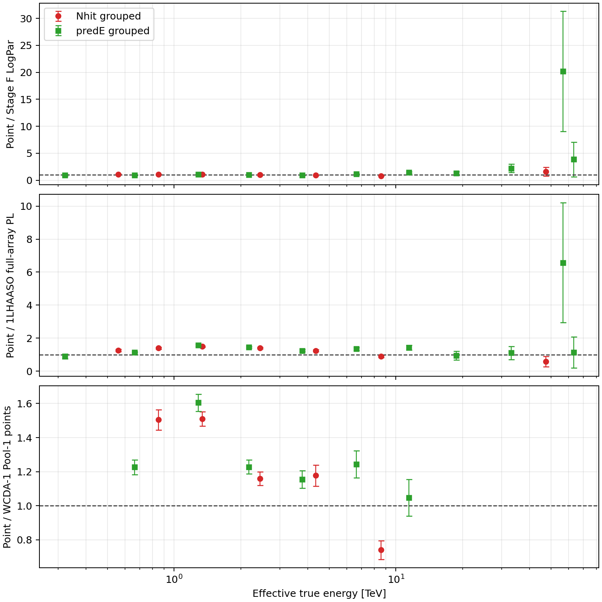
The two requested normalization tests are complete. The official/tutorial forward-fold test supports a normalization mismatch: active30 observed excess is larger than the Stage A response prediction for both external spectra, with total observed/expected 1.6551 for official pass5 and 1.5557 for tutorial v0.99. Most cells are above unity in both cases.
The off-source fake-source core-residual test does not show positive residuals. The two active30 fake-source controls have negative excess, approximately -2774 and -2869 counts, so they do not provide direct evidence for a generic 2D background underprediction. The current evidence points instead to a source-local response/background-normalization problem that still needs to be separated.